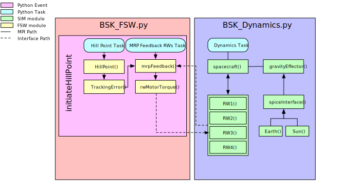
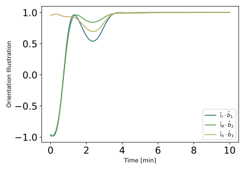
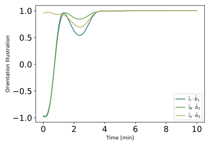

3. scenario_AttGuidance
3.1. Overview
This script sets up a 6-DOF spacecraft orbiting Earth. The goal of the scenario is to make use of the hill pointing module with the Module: mrpFeedback module and a reaction wheel pyramid to control the attitude all within the new BSK_Sim architecture.
The script is found in the folder basilisk/examples/BskSim/scenarios and executed by using:
python3 scenario_AttGuidance.py
The simulation mimics the basic simulation in the earlier tutorial in scenarioAttitudeGuidance.
The simulation layout is shown in the following illustration.
The initial setup for the simulation closely models that of scenario_FeedbackRW.
3.2. Custom Dynamics Configurations Instructions
The modules required for this scenario are identical to those used in scenario_FeedbackRW.
3.3. Custom FSW Configurations Instructions
Three of the four modules required to configure the Module: hillPoint FSW mode have already been included
within the BSK_Fsw framework
(mrpFeedbackRWConfig(), attTrackingErrorConfig(), rwMotorTorqueConfig()). The only remaining
module is the hill pointing module itself which is set within __init__().
These modules provide the initial setup for an attitude guidance system that makes use of a hill pointing model, a module that tracks the error of the spacecraft’s MRP parameters against the vector pointing towards the central, planetary body, and uses a module that takes that information to provide a torque to correct for the error.
This event is triggered when a user calls self.modeRequest = ‘hillPoint’ in any of file.
3.4. Illustration of Simulation Results
showPlots = True
 

- scenario_AttGuidance.run(showPlots)[source]
The scenarios can be run with the followings setups parameters:
- Parameters:
showPlots (bool) – Determines if the script should display plots